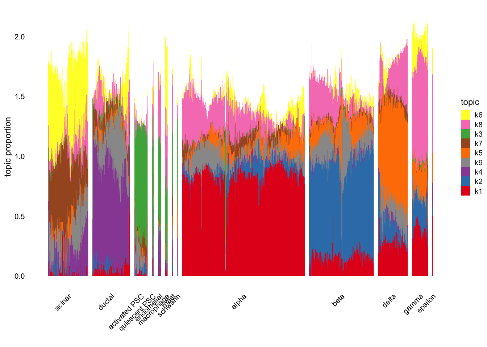

Last updated: 2025-05-05
Checks: 6 1
Knit directory: log1p_experiments/
This reproducible R Markdown analysis was created with workflowr (version 1.7.1). The Checks tab describes the reproducibility checks that were applied when the results were created. The Past versions tab lists the development history.
The R Markdown is untracked by Git. To know which version of the R
Markdown file created these results, you’ll want to first commit it to
the Git repo. If you’re still working on the analysis, you can ignore
this warning. When you’re finished, you can run
wflow_publish to commit the R Markdown file and build the
HTML.
Great job! The global environment was empty. Objects defined in the global environment can affect the analysis in your R Markdown file in unknown ways. For reproduciblity it’s best to always run the code in an empty environment.
The command set.seed(20240402) was run prior to running
the code in the R Markdown file. Setting a seed ensures that any results
that rely on randomness, e.g. subsampling or permutations, are
reproducible.
Great job! Recording the operating system, R version, and package versions is critical for reproducibility.
Nice! There were no cached chunks for this analysis, so you can be confident that you successfully produced the results during this run.
Great job! Using relative paths to the files within your workflowr project makes it easier to run your code on other machines.
Great! You are using Git for version control. Tracking code development and connecting the code version to the results is critical for reproducibility.
The results in this page were generated with repository version f678b42. See the Past versions tab to see a history of the changes made to the R Markdown and HTML files.
Note that you need to be careful to ensure that all relevant files for
the analysis have been committed to Git prior to generating the results
(you can use wflow_publish or
wflow_git_commit). workflowr only checks the R Markdown
file, but you know if there are other scripts or data files that it
depends on. Below is the status of the Git repository when the results
were generated:
Ignored files:
Ignored: .DS_Store
Ignored: .Rhistory
Ignored: data/.DS_Store
Untracked files:
Untracked: analysis/pancreas_go.Rmd
Unstaged changes:
Modified: analysis/bbc4.Rmd
Modified: analysis/gtex_sex_diff.Rmd
Note that any generated files, e.g. HTML, png, CSS, etc., are not included in this status report because it is ok for generated content to have uncommitted changes.
There are no past versions. Publish this analysis with
wflow_publish() to start tracking its development.
library(Matrix)
load("~/Documents/passPCA/inst/paper_figures/data/experiment_results.Rdata")
load("~/Documents/passPCA/inst/paper_figures/data/raw_data/pancreas.RData")i <- which(sample_info$tech == "celseq2")
sample_info <- sample_info[i,]
counts <- counts[i,]
sample_info <- transform(sample_info,celltype = factor(celltype))library(passPCA)
celltype <- sample_info$celltype
celltype <-
factor(celltype,
c("acinar","ductal","activated_stellate","quiescent_stellate",
"endothelial","macrophage","mast","schwann","alpha","beta",
"delta","gamma","epsilon"))
levels(celltype)[levels(celltype) == "activated_stellate"] <- "activated PSC"
levels(celltype)[levels(celltype) == "quiescent_stellate"] <- "quiescent PSC"
K <- 9
fit <- res_list$pancreas$`1`
colnames(fit$LL) <- paste0(
"k", c(1, 3, 6, 5, 2, 7, 8, 9, 4)
)
colnames(fit$FF) <- paste0(
"k", c(1, 3, 6, 5, 2, 7, 8, 9, 4)
)
fit$LL <- fit$LL[,paste0("k", 1:K)]
fit$FF <- fit$FF[,paste0("k", 1:K)]
topic_order <- rev(paste0(
"k",
c(1, 2, 4, 9, 5, 7, 3, 8, 6)
))
sp <- normalized_structure_plot(
fit,
grouping = celltype,gap = 30,perplexity = 70,n = Inf, font.size = 12,
topics = topic_order
) sp$plot
library(clusterProfiler)
library(fgsea)
library(AnnotationDbi)
library(org.Hs.eg.db)
get_go_terms <- function(V) {
K <- ncol(V)
genes_vec <- c()
go_terms_vec <- c()
for (k in 1:K) {
driving_genes <- names(sort(V[,k], decreasing = TRUE))[1:20]
go_result <- enrichGO(gene = driving_genes,
OrgDb = org.Hs.eg.db,
keyType = "SYMBOL",
ont = "BP",
pAdjustMethod = "bonferroni",
pvalueCutoff = 0.05,
qvalueCutoff = 0.1)@result
go_result <- go_result %>%
dplyr::filter(p.adjust < .01)
go_terms <- go_result$Description
genes_vec <- c(genes_vec, paste(driving_genes, collapse = ", "))
go_terms_vec <- c(go_terms_vec, paste(go_terms, collapse = ", "))
}
go_df <- data.frame(
driving_genes = genes_vec,
go_terms = go_terms_vec,
factor = 1:K
)
return(go_df)
}
gdf_c1 <- get_go_terms(fit$FF)knitr::kable(gdf_c1)| driving_genes | go_terms | factor |
|---|---|---|
| GCG, TTR, MALAT1, GNAS, CHGB, CHGA, ALDH1A1, TM4SF4, PCSK2, SCG2, VGF, CPE, GC, SCG5, B2M, EEF1A1, CLU, RPL41, SPINT2, SLC30A8 | peptide hormone processing, signaling receptor ligand precursor processing, insulin metabolic process, hormone secretion, hormone transport, hormone metabolic process, peptide hormone secretion, peptide secretion, peptide transport, signal release, amide transport | 1 |
| IAPP, INS, GNAS, FTH1, MALAT1, TTR, FTL, RBP4, G6PC2, NPTX2, SCGN, EEF1A1, SLC30A8, CHGA, ABCC8, MAFA, RPL41, SCD, HADH, RPL5 | peptide hormone secretion, peptide secretion, peptide transport, hormone secretion, amide transport, hormone transport, regulation of peptide hormone secretion, regulation of peptide secretion, insulin secretion, regulation of peptide transport, protein secretion, establishment of protein localization to extracellular region, protein localization to extracellular region, regulation of hormone secretion, regulation of protein secretion, regulation of insulin secretion, signal release, regulation of protein transport, negative regulation of protein secretion, positive regulation of peptide hormone secretion, positive regulation of peptide secretion, negative regulation of protein transport, negative regulation of insulin secretion, negative regulation of establishment of protein localization, negative regulation of peptide hormone secretion | 2 |
| COL1A1, SPARC, COL1A2, COL3A1, FN1, TIMP1, COL6A3, COL4A1, IGFBP7, COL4A2, EEF1A1, COL6A1, FTH1, MALAT1, COL5A1, CALD1, SERPINE1, COL15A1, VIM, PXDN | extracellular matrix organization, extracellular structure organization, external encapsulating structure organization, collagen fibril organization, cellular response to amino acid stimulus, cellular response to acid chemical, basement membrane organization, collagen metabolic process, collagen-activated tyrosine kinase receptor signaling pathway, response to amino acid, endodermal cell differentiation, response to acid chemical, extracellular matrix assembly, endoderm formation, collagen-activated signaling pathway, endoderm development, formation of primary germ layer, connective tissue development | 3 |
| SPP1, CFTR, ANXA4, SERPINA3, MMP7, IGFBP7, ANXA2, B2M, CD44, AQP1, SLC4A4, CRP, MALAT1, TMSB4X, CD59, ATP1B1, ATP1A1, OLFM4, ONECUT2, TSPAN8 | sodium ion export across plasma membrane | 4 |
| SST, RBP4, PCSK1, GNAS, SEC11C, CHGA, AQP3, CPE, REG3A, MALAT1, LEPR, RGS2, PAM, CHGB, IDS, BEX1, EEF1A1, ISL1, PEG10, UCHL1 | 5 | |
| REG3A, DUOX2, REG1A, FTL, LYZ, AKR1B10, OLFM4, AKR1C2, ALDOB, B2M, FTH1, REG1B, CFB, ADH1C, SERPINA3, MUC1, SAT1, UBD, AKR1C3, SPINK1 | polyketide metabolic process, aminoglycoside antibiotic metabolic process, doxorubicin metabolic process, glycoside metabolic process, tertiary alcohol metabolic process, hormone metabolic process, primary alcohol metabolic process, humoral immune response, antimicrobial humoral response, quinone metabolic process | 6 |
| CPB1, PRSS1, PNLIP, CEL, CTRB2, CPA1, CELA3A, REG1A, REG1B, CTRB1, PLA2G1B, SPINK1, CLPS, REG3A, CPA2, PNLIPRP2, GP2, AMY2A, CTRC, EEF1A1 | digestion, lipid digestion, antimicrobial humoral immune response mediated by antimicrobial peptide, antimicrobial humoral response, lipid catabolic process | 7 |
| PPY, REG1A, MALAT1, SERPINA1, GHRL, SST, IAPP, PCSK1N, ID2, REG1B, EGR1, MAB21L3, MEIS2, ETV1, AQP3, BTG2, ABCC9, CTRB2, TTR, PAX6 | response to peptide hormone, circadian behavior, rhythmic behavior | 8 |
| HSPA1A, SST, MALAT1, HSP90AA1, SERPINB2, GCG, FTH1, ACTG1, ACTB, HSPA5, GDF15, FTL, SQSTM1, HSPB1, RPL41, HSP90AB1, EEF1A1, EIF1, KRT7, RPL13 | protein refolding, response to unfolded protein, response to topologically incorrect protein, regulation of protein ubiquitination, chaperone-mediated protein complex assembly, protein folding, response to heat, regulation of protein modification by small protein conjugation or removal, regulation of post-translational protein modification | 9 |
sessionInfo()R version 4.4.0 (2024-04-24)
Platform: aarch64-apple-darwin20
Running under: macOS Ventura 13.5
Matrix products: default
BLAS: /Library/Frameworks/R.framework/Versions/4.4-arm64/Resources/lib/libRblas.0.dylib
LAPACK: /Library/Frameworks/R.framework/Versions/4.4-arm64/Resources/lib/libRlapack.dylib; LAPACK version 3.12.0
locale:
[1] en_US.UTF-8/en_US.UTF-8/en_US.UTF-8/C/en_US.UTF-8/en_US.UTF-8
time zone: America/New_York
tzcode source: internal
attached base packages:
[1] stats4 stats graphics grDevices utils datasets methods
[8] base
other attached packages:
[1] org.Hs.eg.db_3.19.1 AnnotationDbi_1.66.0 IRanges_2.38.0
[4] S4Vectors_0.42.0 Biobase_2.64.0 BiocGenerics_0.50.0
[7] fgsea_1.30.0 clusterProfiler_4.12.0 passPCA_0.1-4
[10] Matrix_1.7-0
loaded via a namespace (and not attached):
[1] RColorBrewer_1.1-3 rstudioapi_0.16.0 jsonlite_2.0.0
[4] magrittr_2.0.3 farver_2.1.2 rmarkdown_2.29
[7] fs_1.6.6 zlibbioc_1.50.0 vctrs_0.6.5
[10] memoise_2.0.1 ggtree_3.12.0 SQUAREM_2021.1
[13] mixsqp_0.3-54 htmltools_0.5.8.1 progress_1.2.3
[16] truncnorm_1.0-9 gridGraphics_0.5-1 sass_0.4.10
[19] bslib_0.9.0 htmlwidgets_1.6.4 fastTopics_0.7-24
[22] plyr_1.8.9 plotly_4.10.4 cachem_1.1.0
[25] sfsmisc_1.1-18 igraph_2.0.3 lifecycle_1.0.4
[28] startupmsg_0.9.6.1 pkgconfig_2.0.3 gson_0.1.0
[31] R6_2.6.1 fastmap_1.2.0 GenomeInfoDbData_1.2.12
[34] aplot_0.2.3 digest_0.6.37 enrichplot_1.24.0
[37] colorspace_2.1-1 patchwork_1.2.0 rprojroot_2.0.4
[40] irlba_2.3.5.1 RSQLite_2.3.7 invgamma_1.1
[43] labeling_0.4.3 httr_1.4.7 polyclip_1.10-6
[46] compiler_4.4.0 bit64_4.0.5 withr_3.0.2
[49] BiocParallel_1.38.0 viridis_0.6.5 DBI_1.2.3
[52] ggforce_0.4.2 MASS_7.3-61 HDO.db_0.99.1
[55] gtools_3.9.5 distr_2.9.3 tools_4.4.0
[58] scatterpie_0.2.3 ape_5.8 httpuv_1.6.15
[61] glue_1.8.0 quadprog_1.5-8 nlme_3.1-165
[64] GOSemSim_2.30.0 promises_1.3.2 shadowtext_0.1.3
[67] grid_4.4.0 Rtsne_0.17 reshape2_1.4.4
[70] generics_0.1.3 gtable_0.3.6 tidyr_1.3.1
[73] data.table_1.17.0 hms_1.1.3 tidygraph_1.3.1
[76] XVector_0.44.0 ggrepel_0.9.6 pillar_1.10.2
[79] stringr_1.5.1 yulab.utils_0.1.4 later_1.4.2
[82] splines_4.4.0 dplyr_1.1.4 tweenr_2.0.3
[85] treeio_1.28.0 lattice_0.22-6 bit_4.0.5
[88] tidyselect_1.2.1 GO.db_3.19.1 Biostrings_2.72.1
[91] pbapply_1.7-2 knitr_1.50 git2r_0.33.0
[94] gridExtra_2.3 RhpcBLASctl_0.23-42 xfun_0.52
[97] graphlayouts_1.1.1 stringi_1.8.7 UCSC.utils_1.0.0
[100] ggfun_0.1.5 workflowr_1.7.1 lazyeval_0.2.2
[103] yaml_2.3.10 evaluate_1.0.3 codetools_0.2-20
[106] ggraph_2.2.1 tibble_3.2.1 qvalue_2.36.0
[109] ggplotify_0.1.2 cli_3.6.5 uwot_0.2.3
[112] RcppParallel_5.1.10 munsell_0.5.1 jquerylib_0.1.4
[115] Rcpp_1.0.14 GenomeInfoDb_1.40.1 png_0.1-8
[118] parallel_4.4.0 ggplot2_3.5.2 blob_1.2.4
[121] prettyunits_1.2.0 DOSE_3.30.1 tidytree_0.4.6
[124] viridisLite_0.4.2 scales_1.3.0 purrr_1.0.4
[127] crayon_1.5.3 rlang_1.1.6 cowplot_1.1.3
[130] fastmatch_1.1-4 ashr_2.2-66 KEGGREST_1.44.1